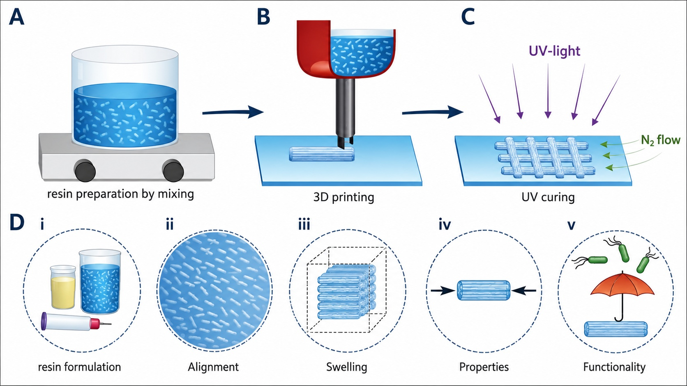
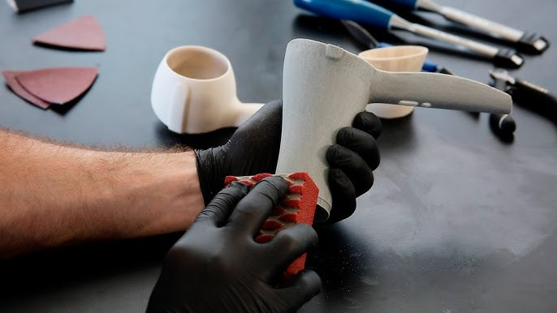
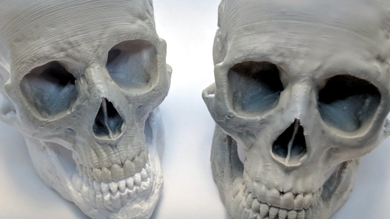
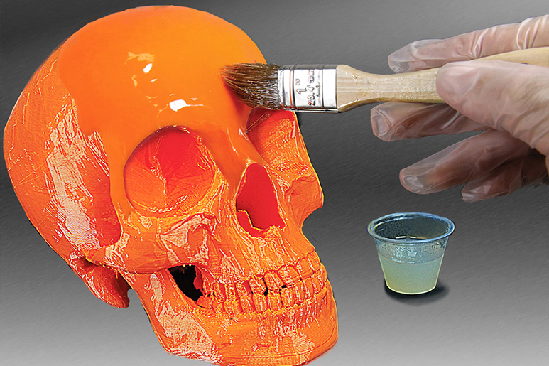

Do Bruto ao Perfeito
Este guia completo ensina técnicas profissionais de pós-processamento para transformar suas impressões 3D em peças com acabamento de nível industrial. Aprenda cura UV otimizada, lixamento profissional, polimento, pintura e acabamentos especiais!
1. Cura UV Otimizada
Objetivo: Completar a polimerização da resina para máxima resistência e estabilidade dimensional.

📋 Passo a Passo da Cura UV
⏱️ Tempos de Cura Recomendados
| Tipo de Resina | Tempo de Cura | Temperatura |
|---|---|---|
| Resina Standard (Spin+) | 5-8 minutos | 40-60°C |
| Resina Tough/ABS-Like | 8-12 minutos | 50-70°C |
| Resina Flexível | 3-5 minutos | 30-40°C |
| Resina Dental | 10-15 minutos | 60-80°C |
| Resina Transparente | 5-8 minutos (em água) | 40-50°C |
2. Lixamento Profissional
Objetivo: Remover marcas de camadas, suportes e imperfeições para criar superfície lisa e uniforme.

🔢 Progressão de Grãos de Lixa
O segredo do lixamento profissional está na progressão gradual dos grãos:
| Grão | Uso | Quando Usar |
|---|---|---|
| 180-220 | Desbaste inicial | Remover marcas de suportes, layer lines grossas |
| 320-400 | Lixamento médio | Suavizar superfície após desbaste |
| 600-800 | Lixamento fino | Preparar para polimento ou pintura |
| 1000-1500 | Lixamento extra-fino | Pré-polimento, acabamento fosco |
| 2000-3000 | Polimento inicial | Preparar para polimento espelhado |
📋 Técnica de Lixamento Correto
3. Polimento para Acabamento Espelhado
Objetivo: Criar superfície brilhante e reflexiva de nível profissional.

📋 Processo de Polimento
🔧 Ferramentas Necessárias
- ✓ Politriz rotativa (1500-3000 RPM)
- ✓ Rodas de polimento (algodão, flanela, feltro)
- ✓ Pastas de polir (4 grãos)
- ✓ Panos de microfibra
🧪 Materiais Alternativos
- ✓ Creme dental (polimento leve)
- ✓ Brasso (polimento de metais)
- ✓ Novus Plastic Polish (específico para plásticos)
- ✓ Polywatch (polimento de acrílicos)
🎯 Acabamento Espelhado vs Fosco
Espelhado: Lixe até 3000 + polimento completo = superfície reflexiva
Fosco Premium: Pare no lixamento 1500 = acabamento fosco uniforme e profissional
Semi-Brilho: Lixe até 2000 + polimento leve = brilho suave sem reflexo
4. Pintura Profissional
Objetivo: Aplicar cor e acabamento de qualidade profissional com durabilidade.

📋 Processo Completo de Pintura
🎨 Tipos de Tinta e Aplicações
| Tipo de Tinta | Vantagens | Melhor Para |
|---|---|---|
| Acrílica (pincel) | Fácil de usar, à base de água, sem cheiro | Miniaturas, detalhes, iniciantes |
| Spray (lata) | Cobertura uniforme, rápida, sem marcas | Peças grandes, acabamento liso |
| Aerógrafo | Controle total, gradientes, profissional | Trabalhos profissionais, efeitos especiais |
| Esmalte sintético | Muito durável, brilho intenso | Peças funcionais, uso externo |
🖌️ Kit Básico de Pintura
- ✓ Primer cinza para plásticos
- ✓ Tintas acrílicas (cores básicas)
- ✓ Pincéis variados (00, 0, 2, 4)
- ✓ Verniz spray (fosco/brilhante)
- ✓ Fita crepe para máscaras
- ✓ Paleta e recipientes para água
🎨 Kit Avançado
- ✓ Aerógrafo + compressor
- ✓ Cabine de pintura
- ✓ Tintas para aerógrafo
- ✓ Máscaras líquidas
- ✓ Pigmentos e pós metálicos
- ✓ Thinner e diluentes
5. Acabamentos Especiais
Objetivo: Aplicar efeitos avançados para resultados únicos e impressionantes.
🌟 Técnicas de Acabamento Especial
1. Metalização
Efeito: Acabamento metálico realista (ouro, prata, cobre, bronze)
Técnica:
- Lixe até 1500 para superfície lisa
- Aplique primer preto fosco
- Aplique tinta metálica (spray ou aerógrafo)
- Polimento leve com palha de aço 0000
- Verniz brilhante para proteção
2. Weathering (Envelhecimento)
Efeito: Aparência desgastada, usada, realista
Técnica:
- Pinte a base normalmente
- Aplique wash (tinta diluída 1:10) nos relevos
- Dry brush (pincel seco) com cor clara nos cantos
- Pigmentos de ferrugem/poeira em áreas desgastadas
- Verniz fosco para fixar
3. Efeito Cromado
Efeito: Acabamento espelhado cromado
Técnica:
- Polimento espelhado completo (até 3000)
- Primer preto brilhante
- Tinta cromada especial (Alclad, Molotow)
- NÃO aplicar verniz (perde o efeito)
4. Transparência Cristalina
Efeito: Acabamento transparente como vidro
Técnica:
- Use resina transparente de alta qualidade
- Cure em água para evitar amarelamento
- Lixamento úmido progressivo até 3000
- Polimento completo com pasta diamante
- Opcional: aplicar resina epóxi líquida para acabamento vítreo
5. Efeito Mármore
Efeito: Aparência de pedra mármore
Técnica:
- Base branca ou cinza clara
- Veias com pincel fino (preto/cinza escuro)
- Esfumaçar com pincel seco ou esponja
- Verniz acetinado para acabamento natural
6. Efeito Madeira
Efeito: Textura de madeira realista
Técnica:
- Base marrom claro/bege
- Veios com pincel de cerdas separadas (marrom escuro)
- Wash marrom para profundidade
- Dry brush com bege claro nos altos
- Verniz fosco ou acetinado
🛠️ Checklist de Materiais Completo
| Categoria | Itens Essenciais | Itens Avançados |
|---|---|---|
| Cura UV | Câmara UV, IPA 99%, recipiente para água | Câmara UV com rotação, termômetro, timer |
| Lixamento | Lixas 220-3000, bacia, água | Lixadeira orbital, esponjas abrasivas, blocos de lixa |
| Polimento | Pastas de polir, panos microfibra | Politriz rotativa, rodas variadas, pasta diamante |
| Pintura | Primer, tintas acrílicas, pincéis, verniz | Aerógrafo, compressor, cabine, máscaras líquidas |
| Acabamentos | Tintas metálicas, pigmentos básicos | Tintas cromadas, folhas metálicas, resina epóxi |
- ❌ Não lavar bem antes da cura UV (resina não curada gruda)
- ❌ Curar peça molhada (manchas brancas)
- ❌ Pular grãos de lixa (arranhões profundos)
- ❌ Lixar a seco (poeira tóxica + acabamento ruim)
- ❌ Pressionar demais na lixa (marcas profundas)
- ❌ Não limpar entre grãos (contamina lixa fina)
- ❌ Polir sem lixar até 2000+ (não fica espelhado)
- ❌ Pintar sem primer (tinta descasca)
- ❌ Camadas grossas de tinta (escorrimento)
- ❌ Não usar verniz final (pintura desgasta rápido)
🎯 Dicas Finais para Resultados Profissionais
- 🔹 Paciência é fundamental: Pós-processamento leva mais tempo que a impressão!
- 🔹 Invista em ferramentas: Boas ferramentas fazem diferença enorme
- 🔹 Pratique em peças de teste: Não aprenda em peças importantes
- 🔹 Documente seu processo: Anote o que funciona para cada tipo de peça
- 🔹 Use EPI: Luvas, máscara e óculos sempre!
- 🔹 Trabalhe em ambiente ventilado: IPA e tintas liberam vapores
- 🔹 Organize seu espaço: Área limpa = melhores resultados
- 🔹 Aprenda com a comunidade: Compartilhe e aprenda técnicas novas
A equipe Quanton3D está pronta para ajudar com dúvidas sobre pós-processamento!
Contato:
📱 WhatsApp: (31) 3271-6935
📧 Email: suporte@quanton3d.com.br